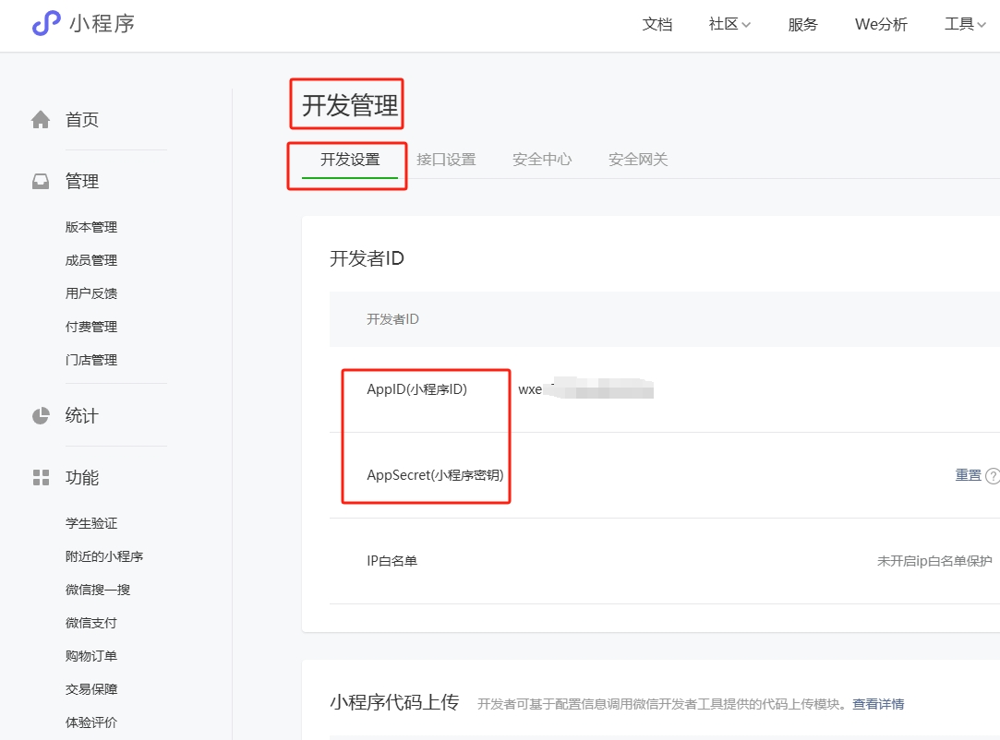

如何使用自建小程序?
1. 什么是Url Scheme？
URL Scheme是一种特殊的URL格式，它允许开发者为自己的App定义一种独特的URL格式，从而实现与其他App或Web页面的交互。通过URL Scheme，我们可以直接打开指定的App页面，而无需经过App的首页。这种技术在实际应用中具有很大的价值，如分享内容、实现跳转等。
2. 如何创建Url Scheme？
既然你选择了Url Scheme，那么就是使用你自己的小程序去实现跳转。微信对外开放的URL Scheme是通过微信小程序进行交互的，即你在微信外部想要跳入微信APP内指定界面，是直接打开一个小程序的，微信的Url Scheme有开放接口，你可以阅读开发文档进行生成，这需要有技术能力的人才可以创建。详见开发文档，还需要知道的是，生成Url Scheme是需要企业认证的小程序，个人小程序没有这个接口权限。
3. Url Scheme的格式
微信小程序Url Scheme的格式是：weixin://dl/business/?t=TICKET，其中TICKET是一个参数，这个参数决定要跳转到哪个小程序哪个页面，是通过API随机生成的。
4. 自建小程序是什么意思？
意思是你自己开发和上线的小程序，小程序完全由你自行搭建。因此你可以任意开发页面去实现跳转和展示二维码，需要注意的是，仅限企业认证小程序，个人小程序不支持。
5. Appid和AppSecret如何获取？
点击链接 https://mp.weixin.qq.com/ 登录小程序管理后台，点击开发管理，即可获取到。

6. 跳转路径如何获取？
跳转路径是你小程序用于展示二维码的页面的路径，如果你的小程序还没有用于展示二维码的页面，那么你需要开发。例如在你小程序源码中，有一个用于展示二维码的页面是 pages/showQrcode/index ，那么你可以直接填写。
7. 路径参数又是什么？
这是你用于展示二维码的页面的参数，如果你的页面并不是写死的，而是通过参数展示不同的二维码，那么这个参数就需要填写，例如你的页面路径是 pages/showQrcode/index ，你是根据传递的id来展示不同的二维码，那么路径参数是 id=xxx，其中xxx就是参数值，如果有多个参数，那么格式就是id=xxx&token=xxx&time=xxx，请注意，根据开发文档要求，参数支持最大1024个字符，只支持数字，大小写英文以及部分特殊字符：!#$&'()*+,/:;=?@-._~%`